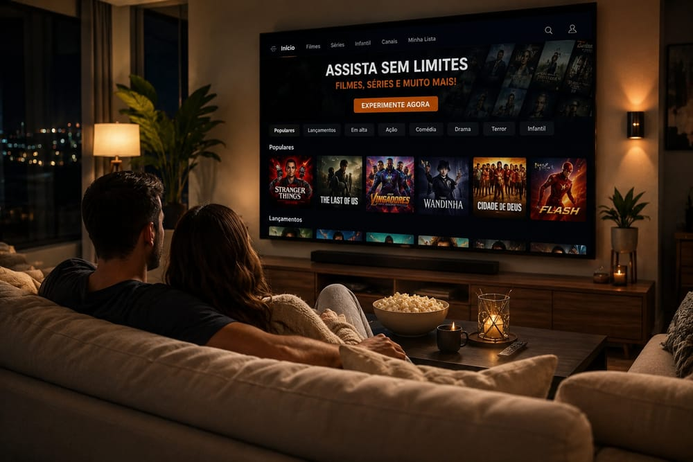

A conta chega alta e o jogo não passa
Você paga uma mensalidade cara de TV por assinatura, mas na hora do jogo do seu time descobre que aquele canal específico está em outro pacote — que custa mais caro ainda.
O SERVIDOR Nº 1 DO BRASIL · ATUALIZADO EM 2026
Mais de 18.000 canais ao vivo e 65.000 filmes e séries em 4K, Full HD e HD. O servidor mais estável do país — não trava nem no domingo de clássico. Sem antena, sem fidelidade e ativado em 5 minutos na sua Smart TV, celular, TV Box ou computador.
✔ Sem cartão de crédito · ✔ Liberação imediata · ✔ Cancele quando quiser

Hoje à noite
Sem antena na parede, sem técnico marcando visita, sem trocar de aplicativo a cada filme. Você senta no sofá, liga a TV e tudo já está lá: o jogo, o lançamento do cinema, a série que todo mundo comenta e o desenho das crianças.
A única coisa que você precisa decidir é o que assistir primeiro.
QUERO ISSO NA MINHA TV HOJETeste grátis de 6 horas · Ativação em 5 minutos
A verdade que ninguém te conta
A maioria das pessoas paga caro por TV e mesmo assim não assiste o que quer. Se você se identificar com pelo menos um destes três problemas, o CINEBOX PLAY foi feito para você.
Você paga uma mensalidade cara de TV por assinatura, mas na hora do jogo do seu time descobre que aquele canal específico está em outro pacote — que custa mais caro ainda.
Somando todas as assinaturas você gasta mais de R$ 150 por mês, e ainda assim o filme que você procurou hoje não estava em nenhuma delas. Catálogo picado, dinheiro espalhado.
Já testou aquele serviço genérico que prometia o mundo por R$ 15? Funcionou dois dias, travou no segundo tempo e o "suporte" nunca mais respondeu.
O CINEBOX PLAY resolve os três de uma vez. E você não precisa acreditar em nós: comprove de graça, na sua TV, antes de pagar um centavo.
Testar grátis por 6 horasPor que somos diferentes
Não é sobre ter "muitos canais" — todo mundo promete isso. É sobre a lista abrir em 1 segundo, não travar no horário de pico e ter uma pessoa de verdade do outro lado quando você precisar. É nesses três pontos que a maioria dos serviços quebra. E é exatamente neles que somos imbatíveis. Estes são os seis pilares do melhor servidor de IPTV do país.
Infraestrutura dedicada, balanceamento de carga e servidores redundantes de verdade — não é lista revendida de terceiro. É por isso que enquanto os outros caem no domingo à noite, no meio do clássico, com todo mundo assistindo ao mesmo tempo, o CINEBOX PLAY continua rodando liso.
Mais de 65.000 filmes e séries, com lançamentos adicionados semanalmente, temporadas completas dubladas e legendadas, e mais de 18.000 canais ao vivo entre abertos, fechados, esportes, notícias, infantil e documentários.
Qualidade real de cinema na sua sala. A lista entrega o melhor bitrate que a sua internet suportar e ajusta automaticamente para você nunca ficar na tela preta.
Nada de técnico em casa, agendamento ou espera de dias. Você paga no Pix, recebe seu login pelo WhatsApp e está assistindo antes do café esfriar.
Smart TV Samsung, LG, TCL, Philco, AOC, Roku, Android TV, TV Box, Fire Stick, celular Android, iPhone, iPad, computador e Chromecast. Um login, todas as telas.
Sem robô, sem ticket, sem "aguarde 48 horas". É uma pessoa respondendo no WhatsApp, todos os dias, para instalar, configurar e resolver qualquer coisa na hora.
Risco zero
Não pedimos que você acredite na nossa palavra. Pedimos 6 horas do seu tempo. Você recebe um acesso completo e sem limitações, com todos os canais e todo o catálogo liberado, exatamente como um cliente pagante.
Abra na sua TV, coloque o canal do seu time, procure aquele filme que você não achava em lugar nenhum e veja com seus próprios olhos se a imagem trava ou não. Só depois disso você decide.
Atendimento humano · Resposta rápida no WhatsApp
Tudo em um lugar só
Todo o conteúdo fica dentro de um único aplicativo, organizado por categoria, com busca por nome e lista de favoritos. Sem trocar de app, sem trocar de senha.
Campeonatos nacionais e internacionais, canais esportivos, lutas, automobilismo e eventos PPV, com transmissão ao vivo em alta definição.
Do clássico ao que acabou de sair do cinema. Catálogo organizado por gênero, ano e popularidade, com áudio dublado e legendado.
Temporadas inteiras, episódio por episódio, com continuação automática. Novos episódios entram no ar logo após a exibição original.
Os canais que você já assiste hoje, mais os fechados de filmes, variedades, novelas e entretenimento, todos ao vivo.
Desenhos, canais infantis e filmes para as crianças, com categoria separada para facilitar o controle do que elas assistem.
Canais de jornalismo 24 horas, documentários, natureza, história, ciência e programas investigativos.
Compatibilidade total
Você não precisa comprar nenhum aparelho novo. Se o seu dispositivo conecta na internet, provavelmente ele já roda o CINEBOX PLAY. Na hora do teste a gente indica o aplicativo ideal para o seu modelo e envia o passo a passo da instalação.
Não sabe se o seu aparelho é compatível? Manda o modelo no WhatsApp que a gente confere em 1 minuto — de graça.
Escolha seu plano
Todos os planos incluem o mesmo conteúdo completo: canais ao vivo, filmes, séries, esportes, 4K e suporte. A única diferença é por quanto tempo você garante o preço. Quanto maior o período, menor a mensalidade.
Para quem quer começar sem compromisso
Preço padrão
Renovação mês a mês, quando você quiser
Economize e esqueça a renovação
de R$ 60,00 por
Equivale a R$ 18,00/mês · você economiza R$ 6,00
O equilíbrio perfeito entre preço e prazo
de R$ 120,00 por
Equivale a R$ 16,00/mês · você economiza R$ 24,00
Preço travado por 12 meses inteiros
de R$ 240,00 por
Equivale a R$ 12,00/mês · você economiza R$ 96,00
Formas de pagamento: Pix (liberação imediata) · Cartão de crédito · Boleto
Precisa assistir em mais de uma TV ao mesmo tempo? Chame no WhatsApp que a gente monta um valor especial de tela extra pra sua casa.
Você testa 6 horas de graça antes de pagar. E mesmo depois de assinar, se dentro de 7 dias você achar que o CINEBOX PLAY não é o que prometemos, é só mandar uma mensagem no WhatsApp que devolvemos o seu dinheiro.
Sem perguntas, sem burocracia, sem letra miúda. Todo o risco é nosso.
Simples assim
Do primeiro clique até o filme rodando na sua TV, o processo inteiro leva menos de 10 minutos.
Clique em qualquer botão verde da página. Você cai direto na nossa conversa, com a mensagem já pronta. Peça o teste grátis ou o plano que escolheu.
No teste, nada é cobrado. Se for assinar, você paga no Pix, cartão ou boleto. A confirmação pelo Pix é instantânea.
Enviamos seu login, o aplicativo certo para o seu aparelho e o passo a passo. Se travar em alguma etapa, a gente te guia em tempo real.
Coloque na ponta do lápis
A comparação abaixo considera um cenário comum: uma família que quer futebol, canais ao vivo, filmes de cinema e séries. Veja quanto isso custa em cada modelo.
| Critério | CINEBOX PLAY | TV por assinatura | Streamings somados |
|---|---|---|---|
| Custo mensal aproximado | a partir de R$ 12,00 | R$ 120 a R$ 300 | R$ 100 a R$ 200 |
| Canais ao vivo | ✅ +18.000 | ✅ limitado ao pacote | ❌ quase nenhum |
| Filmes e séries sob demanda | ✅ +65.000 | ⚠️ catálogo reduzido | ✅ mas dividido entre apps |
| Fidelidade / multa | ✅ nenhuma | ❌ contrato de 12 meses | ✅ nenhuma |
| Instalação | ✅ 5 minutos, sozinho | ❌ agendamento e técnico | ✅ imediata |
| Precisa de antena ou cabo | ✅ não | ❌ sim | ✅ não |
| Teste antes de pagar | ✅ 6 horas grátis | ❌ não | ⚠️ raramente |
| Tudo em um único app | ✅ sim | ⚠️ parcial | ❌ 4 a 6 apps diferentes |
Por que confiar
Sem promessa que não dá pra checar. Tudo abaixo você confirma sozinho.
App publicado e aprovado na Google Play para Android e Android TV. Você instala pela loja, não por arquivo solto mandado no WhatsApp.
Versão para computador com instalador próprio e atualização automática — o app se atualiza sozinho quando sai versão nova.
Ativação por crédito, em domínio próprio. Sua licença não depende de plataforma de terceiro que pode sair do ar.
Política de privacidade publicada e atendimento por WhatsApp com pessoa de verdade respondendo.
Guia completo
IPTV é a sigla de Internet Protocol Television, ou televisão por protocolo de internet. Em vez de o sinal chegar até você por uma antena parabólica, por cabo coaxial ou por satélite, ele chega pela mesma conexão de internet que você já usa para navegar, mandar mensagem e assistir vídeo. Na prática isso significa que você não precisa de nenhum equipamento adicional, de nenhuma obra na parede e de nenhum técnico visitando a sua casa: basta um aparelho conectado e um aplicativo compatível.
Foi essa mudança de tecnologia que permitiu ao IPTV oferecer, por um preço muito menor, um volume de conteúdo que a TV tradicional não consegue entregar. Como não existe custo de infraestrutura física por assinante, o valor cobrado cai drasticamente — e é por isso que hoje se fala tanto em melhor IPTV do Brasil quando o assunto é economizar sem abrir mão de canais e filmes.
O funcionamento é mais simples do que parece. Existe um servidor que recebe e organiza os canais e o catálogo de filmes e séries. Quando você contrata, recebe um login e uma senha (ou uma URL de lista). Você insere esses dados em um aplicativo instalado na sua Smart TV, no celular, no TV Box ou no computador. A partir daí, o aplicativo se conecta ao servidor e monta a grade completa na sua tela: canais ao vivo de um lado, filmes de outro, séries em uma terceira aba.
Tudo é transmitido em tempo real, no formato de streaming. Você não baixa nada para o aparelho, não ocupa memória e não precisa esperar. É clicar e assistir. Se a sua internet estiver estável, a experiência é idêntica — ou melhor — à da TV por assinatura convencional.
Essa é a dúvida mais comum de quem está pesquisando um teste IPTV grátis pela primeira vez, e a boa notícia é que o consumo é menor do que a maioria imagina. Como referência:
Mais importante do que a velocidade contratada, porém, é a estabilidade da conexão. Uma internet de 300 Mbps com Wi-Fi fraco chegando na TV entrega uma experiência pior do que uma de 50 Mbps com cabo de rede. Se a sua TV fica longe do roteador, prefira o Wi-Fi de 5GHz ou passe um cabo — é a mudança que mais melhora a qualidade da imagem.
O mercado tem muita gente séria e muita gente que some depois do pagamento. Antes de contratar qualquer serviço, avalie estes cinco pontos:
Travamento tem três causas possíveis, e só uma delas é culpa do servidor. A primeira é a sobrecarga do servidor: quando o provedor vende mais acessos do que a infraestrutura suporta, tudo desmorona no horário de pico. A segunda é a conexão do cliente: Wi-Fi fraco, roteador antigo ou muitos aparelhos disputando a mesma banda. A terceira é o aplicativo mal configurado, com buffer baixo ou incompatível com o modelo da TV.
No CINEBOX PLAY trabalhamos com servidores dedicados e balanceamento de carga para eliminar a primeira causa, e o nosso suporte ajuda você a ajustar as outras duas durante a instalação. É por isso que insistimos tanto para que você faça o teste grátis: em 6 horas você consegue avaliar exatamente isso, na sua casa, com a sua internet e no seu aparelho.
Depende do que você assiste. Se você só vê duas séries por mês e não liga para futebol nem para canais ao vivo, um streaming único resolve. Mas se a sua casa tem alguém que acompanha o campeonato, alguém que gosta de novela, uma criança que quer desenho e você que quer filme de cinema, o IPTV sai muito à frente — tanto em variedade quanto em custo. É a diferença entre pagar quatro assinaturas diferentes e pagar uma só.
Somos diretos: não pedimos que você acredite em nós por causa de um texto de site. Pedimos que você pegue o teste IPTV grátis de 6 horas, coloque na sua TV e julgue com os próprios olhos. Se a imagem travar, se o canal que você quer não estiver lá, se o suporte demorar a responder, você não paga nada e segue procurando. Mas se funcionar como prometemos — e é o que acontece na grande maioria dos casos — você vai ter encontrado a sua lista definitiva.
Tire suas dúvidas
Reunimos as 16 perguntas que mais recebemos no WhatsApp. Se a sua não estiver aqui, é só chamar a gente.
IPTV significa Internet Protocol Television. É a transmissão de canais de TV, filmes e séries pela internet, no lugar de antena parabólica ou cabo. Você recebe um login, insere em um aplicativo compatível e assiste em qualquer aparelho conectado à rede.
É só clicar em qualquer botão verde desta página e nos chamar no WhatsApp pedindo o teste. Você recebe o acesso completo em poucos minutos, sem pagar nada e sem informar cartão de crédito. O teste dura 6 horas e libera todo o conteúdo, igualzinho a um plano pago.
Não. O CINEBOX PLAY funciona exclusivamente por internet. Não é preciso instalar antena, passar cabo, furar parede nem receber técnico em casa. Se o aparelho conecta na internet, ele roda o serviço.
Para HD, 10 Mbps já é suficiente. Para Full HD recomendamos 20 Mbps e para 4K a partir de 35 Mbps. Mais importante que a velocidade é a estabilidade: Wi-Fi 5GHz ou cabo de rede entregam a melhor experiência, principalmente se a TV estiver longe do roteador.
Sim. Funciona em Smart TVs Samsung, LG, TCL, Philco, AOC, Roku e Android TV, além de TV Box, Fire Stick, celular Android, iPhone, iPad, computador e Chromecast. Mande o modelo da sua TV no WhatsApp que confirmamos em 1 minuto e já indicamos o app certo.
Cada plano inclui 1 tela simultânea. Você pode deixar o login instalado em vários aparelhos, mas só consegue assistir em um por vez. Se a casa precisar de mais de uma tela ao mesmo tempo, adicionamos telas extras com valor reduzido.
Nenhum dos três. Você renova só quando quiser e para quando quiser. Não existe contrato de permanência, não existe multa de cancelamento e não existe cobrança automática sem a sua autorização.
Aceitamos Pix, cartão de crédito e boleto. O Pix é o mais rápido: a confirmação é instantânea e o acesso costuma ser liberado em menos de 5 minutos.
Assim que o pagamento é confirmado, enviamos o login pelo WhatsApp em até 5 minutos, junto com o link do aplicativo e o passo a passo da instalação para o seu aparelho específico.
Usamos servidores dedicados com balanceamento de carga exatamente para evitar travamento em horário de pico e durante jogos. Se ainda assim algo falhar, o suporte resolve na hora pelo WhatsApp. Faça o teste grátis em um domingo à noite ou durante uma partida — é o melhor jeito de comprovar.
Sim, e esse é justamente o nosso diferencial. O suporte é humano, feito por WhatsApp, todos os dias. Ajudamos na instalação, na configuração do aparelho, na troca de TV e em qualquer dúvida durante todo o período do seu plano. Você não fala com robô e não abre ticket.
Sim. Como tudo funciona por internet, você assiste de qualquer lugar do Brasil: na casa de um parente, no trabalho, na praia ou viajando, inclusive pelo celular usando 4G ou 5G.
Sim, garantia incondicional de 7 dias. Além do teste grátis de 6 horas antes de pagar, se dentro da primeira semana você não gostar, devolvemos o valor integral sem burocracia.
A gente te avisa no WhatsApp alguns dias antes do vencimento. Se você quiser continuar, é só fazer o Pix e o mesmo login é renovado na hora — você não perde configuração, favoritos nem precisa reinstalar nada. Se não quiser renovar, não faz nada: não existe cobrança automática.
Sim. Existe uma categoria só de canais e desenhos infantis, separada do resto, o que facilita deixar a TV das crianças no lugar certo. Como o catálogo é organizado por categoria, cada pessoa da casa encontra rápido o que gosta.
Os serviços de streaming tradicionais oferecem apenas o próprio catálogo, sob demanda, e cada um exige uma assinatura separada. O IPTV reúne canais ao vivo com programação em tempo real e um catálogo enorme de filmes e séries dentro de um único aplicativo — e por um valor bem menor que a soma das assinaturas.
Pela combinação de estabilidade do servidor, tamanho do acervo, preço justo e suporte humano de verdade. Mas não queremos que você acredite só no que está escrito aqui: pegue o teste grátis de 6 horas e decida com base na sua própria experiência, na sua TV e com a sua internet.
Em menos de 10 minutos você pode estar com +18.000 canais e +65.000 filmes e séries rodando na sua TV, pelo preço de um lanche. E o teste é 100% grátis — você só paga se gostar. Quem testa o melhor servidor do Brasil não volta atrás.
QUERO MEU TESTE GRÁTIS DE 6 HORASSem cartão · Sem fidelidade · Garantia de 7 dias